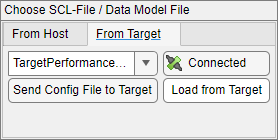

IEC61850 - Server Read/Write
IEC61850 - Server Read/Write — Reads and writes the local data of the MMS server.
Description
This block is used to read and modify the local MMS server data model. Your model can contain multiple IEC 61850 server Read/Write blocks for each IEC 61850 server in your target machine.
Ports
- Data Attribute Path
For each data attribute selected, an input port is created and will write to the local MMS server data.
Use Byte Pack blocks to convert signed values or floating-point numbers. You can pack one double value to a vector of type uint16 and length 4.
- Data Attribute Path
Each output port represents a data attribute and will read from the local MMS server data. The data type of the output port is defined in the Read/Write Port Data Type dropdown list in the block mask.
Use Byte Unpack blocks to convert to signed values or floating-point numbers. You can unpack a vector of type uint16 and length 4 to one double value.
Parameters
- Server Station ID
Apply the Server Station ID of the corresponding Setup block. Must range between 0 and 65535.
- Read/Write Port Data Type
This dropdown list defines the data type of the Read/Write block. The supported data types are:
Double
Single
The port will be a float.
Int8 / Uint8
The port will be a signed or unsigned byte.
Int16 / Uint16
The port will be two signed or unsigned bytes.
Int32 / Uint32
The port will be four signed or unsigned bytes.
Boolean
ASCII or Unicode String
The port will be an array of uint8, max. 255 bytes.
- Sample Time
Defines the base sample time at which this driver block gets its sample hit. This parameter can also be set to -1 for inherited sample time. The units are in seconds.
Choose SCL-File
There are two ways to load a data model into the block mask:
...from Host PC

Search for the .cid file on your host PC that you would like to load into the Data Model Navigator by pressing the button on the right hand side. After the path has been inserted into the edit field, press the button below Load from Host PC.
...from Target

When a runtime application with IEC 61850 Server blocks starts, the Setup blocks will locally store the data model of each IED/Server on the target machine. This allows for reloading the data model without requiring a .cid file. Before clicking Load from Target, ensure that the Station ID is set correctly.
Send Config File to Target will send the IED data model to a target machine. This is the same functionality as the button in the Server setup block mask. Once again, ensure that the Station ID is set correctly.